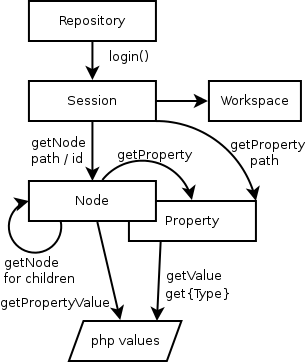

PHP Content Repository API based on the Java Content Repository specification (JSR-283). If you know JCR, get the differences between PHPCR and JCR at a glance. To learn PHPCR, please have a look at our tutorial.

$factoryclass = '\Jackalope\RepositoryFactoryJackrabbit';
$parameters = array('jackalope.jackrabbit_uri' => 'http://localhost:8080/server');
// end of implementation specific configuration
$factory = new $factoryclass();
$repository = $factory->getRepository($parameters);
$credentials = new \PHPCR\SimpleCredentials('admin','admin');
$session = $repository->login($credentials, 'default');
$root = $session->getRootNode();
$node = $root->addNode('test', 'nt:unstructured');
$node->setProperty('prop', 'value');
$session->save();
...
$node = $session->getNode('/test');
echo $node->getPropertyValue('prop');
For general information on PHPCR see phpcr.github.io